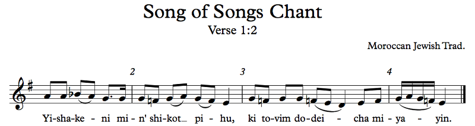

OFFTONIC THEORY — Chapter 7: Modes and Scales
7.4 The Diatonic Modes
If we take the diatonic scale — that is, the white keys, or some transposition thereof — and put the tonal center on the different notes of that scale, we get the diatonic modes. These are often called the church modes, since they were used in old medieval chant, but this is actually completely wrong. We'll talk about the real church modes a bit later. They're also often called the Greek modes either because they were used in ancient Greece (which they weren't — not really) or because their names refer to Greek locations (which they don't; many of them are actually in Asia Minor, and Mixolydia is not a place, but Locris at least is actually in Greece). Some also just call them "the modes", which leaves out all the other modes in use. So we're going to call them the diatonic modes, because that's what they actually are. As a quick chart:
Example 7.13
This chart shows the diatonic modes, first as a mode of the diatonic scale, and second as the mode transposed to C. When we were talking about jazz chords in the last chapter, we saw these (and other) modes as chords, and we thought of playing D dorian, for example, as playing the C major scale. D dorian's parent scale was C major. Well, forget all that. When we're talking about modes, not about playing vertical chords horizontally but about actual modes, how one might derive the modes doesn't matter. All that matters is what you see on the right side of the chart. Other than locrian, it's useful to think of these modes as alterations of the two principal modes, major and minor, since they tend to work fairly similarly some of the time.
Why not locrian?
It's just too weird because of that b5. You'll see when we get to it. Now, altering scales is one of those things where the nomenclature can be inconsistent with how we do things elsewhere, but that's what it is. We've been naming notes relative to the major scale, but when we alter a note in a scale name, we actually name it relative to that scale. For example, dorian is minor with a raised 6th, so we call it minor #6. Minor already had a b6, but we don't call it minor natural 6; we call it minor #6. Just the way it is.
We like to talk about the diatonic modes in order. We order them thus:

Example 7.14
The diatonic modes are presented above roughly in order from brightest to darkest, whatever that means. There are a bunch of important relationships between these modes that we can see clearly from this chart, but the biggest one is that each mode is one note flatter than the last, going around the circle of fifths. Generally, we don't use key signatures specific to the modes — for music in mixolydian, for example, we just use the major key signature and mark all the b7's with accidentals. You'll see this shortly. But if we were to use key signatures, C lydian would have one sharp, C ionian would have no sharps or flats, C mixolydian would have one flat, C dorian would have two, C aeolian would have three, C phrygian would have four, and C locrian would have five. You can't have two sharps or six flats, because then the tonic C would no longer be in the scale!
The notes of the diatonic scale are all next to each other on the circle of fifths, as we saw when we talked about the circle of fifths a few chapters back. As we go down the diatonic modes, though, we shift counterclockwise which group of notes we're using. So, C lydian is C G D A E B F#, C ionian is F C G D A E B, C mixolydian is Bb F C G D A E, etc. It should be noted that the new note is the most important characteristic tone of the mode, and it always forms a tritone with another note in the scale. So, in lydian, we have the #4 making a tritone with 1; in major, we have both the 4 and the 7; in mixolydian, the b7 makes a tritone with the 3; in dorian, the b3 makes a tritone with the 6; in minor, the b6 makes a tritone with the 2; in phrygian, the b2 makes a tritone with the 5; in locrian, the b5 makes a tritone with the 1. The tritone itself isn't so important, necessarily; what is important is what makes each of these modes sound different from plain major or minor.
Another interesting aspect of these modes is that if you play one of the modes upside down, you get a different mode. Lydian upside down becomes locrian; ionian becomes phrygian; mixolydian becomes aeolian; dorian upside down is still dorian.
All of this is pretty pointless without music, so let's actually hear some in each of these modes. Well, each of them except ionian, because that's literally the same thing as major, which we've already discussed. You can play with each of these modes in the Offtonic Scale Keyboard, and I would encourage you to do so and noodle around a bit as we talk about each mode.
7.4.1 Lydian
This is the lydian scale, which you'll remember is major but with a raised fourth:
Example 7.15
The characteristic tone here is the #4 more than anything else, and the #4 is often called the "lydian note". The lydian mode actually often comes in varieties with other alterations, like a b7 or #5, which we'll talk about a bit later. The problem with this lydian note, though, is that it's not really a valid point of stability. When you hear the #4, it sounds great as part of the tonic I chord as a #11, but it doesn't really work as the root of its own chord. So while the major scale can rely on the stabilizing 4 - 3 motion and modulating to the subdominant, the lydian scale cannot, and as a result, it's not a very versatile scale. I find that everything in the lydian scale tends to sound about the same, and it gets boring fast. Many pieces that use it only do so briefly. Probably the most famous example of this scale is the Simpsons theme (which is actually in lydian b7 but anyway):

Example 7.16
Lydian is very stereotypically used at the start of 1980's children's movies, and The Simpsons didn't want to be left out! Of course, this is a Danny Elfman piece, so it doesn't stay in one key for very long. The last note of the excerpt (and arguably the second to last as well) is in a new key already. It's a very common trope in background music (also called incidental music) to change keys every few bars, which helps keep things fresh, and Danny Elfman is known for doing this a lot.
The lydian mode is also associated somewhat with the magic of space, which you may be able to spot in various movies, or even in Super Mario Galaxy, though this example is not even close to being space-like:

Example 7.17
Notice how most of the lydian section is just harmonized by one chord. Even that weird noodling is still over the same background, though that does change in the last four bars of the excerpt and thereafter in the actual piece. That weird noodling, speaking of which, is supposed to call to mind silliness and disorganization, and I think it does that quite well. In the game, this music plays during the ray surfing course, which is fast-paced, a bit wacky, and very difficult. I'd say Yokota's composition fits that theme perfectly, don't you?
This piece also exhibits something we see a lot in lydian music, mostly because lydian harmony is just so damn static: lydian sections don't last long. Some bit of the piece will be in lydian, maybe the characteristic bit at the start, but then the less exciting stuff in the middle will be in more versatile modes like major or whatever else. As great as the #4 is (and even the half-sharp 4 in the 11th harmonic, which we'll probably talk about someday), it's difficult to make it go anywhere.
This brings up yet another important consideration when we're talking about modes: not all modes are equal.
Hey! #AllModesMatter!
Eh. No. Some modes are just not as useful as others. I mean, be my guest and write in whatever mode you want; don't let me stop you. But there's a reason why Western music settled on major and minor. They have useful features — like a subdominant, which lydian lacks.
Isn't the #4 the subdominant?
Sure, technically, but it doesn't function like a subdominant does when it's a regular 4. The lydian scale trades the versatility of the 4 for the beauty and excitement of the #4.
I noticed that you used the major key signature in the examples. Why?
Because I think of lydian as an alteration of major; it's major with a #4.
Why not just put the #4 in the key signature then?
Great question. The answer is that musicians are used to only seeing major and minor key signatures; if a musician sees three sharps, that's either A major or F# minor. The musician will not think, "ah, this might be D lydian." Since the goal of sheet music is to communicate to the reader, a more standard key signature achieves that goal better. The two sharps make it clear that it's either D major or B minor, and we can quickly see that it's D major. With a raised fourth, but whatever; it's D major! We can think about it for a bit and see that it's actually D lydian, but it's actually not so important to do that. The key signature roughly tells you the tonic and the mode, and you can figure out the details yourself later on.
Before long you'll see modes other than the diatonic ones, and they don't fit with the standard key signatures. That presents another problem. Some composers decide to write nonstandard key signatures. I personally think that's a bad idea, but it's actually standard in ethnomusicology, since there might be a wide variety of modes and the nonstandard key signature helps identify that mode more readily. In a mode that goes D Eb F# G A Bb C (D phrygian dominant), you might actually see F#, Bb, and Eb all in the key signature.
Anyway, moving on.
7.4.2 Ionian
There's nothing more to say about the ionian mode, since it's identical to the major mode we discussed in the previous section.
So why does it have a different name? Why not just call it "major"?
Interestingly, "ionian" came first. There used to be 8 church modes: dorian, hypodorian, phrygian, hypophrygian, lydian, hypolydian, mixolydian, and hypomixolydian, with the "main" modes (dorian, phrygian, lydian, mixolydian) being authentic modes and the others (hypodorian, hypophrygian, hypolydian, hypomixolydian) being the plagal versions of their corresponding authentic modes. Note that these were not the diatonic modes we're talking about! They were treated very differently! To that, theorists eventually added three more pairs, ionian/hypoionian, aeolian/hypoaeolian, and eventually locrian/hypolocrian. So when people started using the modern diatonic modes, which are descendants of the church modes but are actually completely different, they used the old names. The church modes themselves are given names from the modes used in ancient Greece, though the ancient Greek modes were even more completely different. In any case, while the major and minor keys came later, the diatonic modes came even later (to Western music theory — they were well in use in folk music throughout the world) as a generalization of the major and minor system, so ionian has no identity other than the good old major mode.
There's really nothing more to say about the ionian mode, though, so let's keep going.
7.4.3 Mixolydian
The mixolydian scale is just major with a lowered 7th, and it works basically just like major:
Example 7.18
As you can see, it has the same lower pentachord as major and only differs in one of the upper notes. As such, it's not actually very different from major. What it doesn't have, though, is the leading tone, and that's... not a big deal. Common Practice music cares a lot about the leading tone, but nobody else does. The mixolydian mode is all over rock music, folk music in a variety of different cultures, etc. I wouldn't generally consider it fundamentally different from major; it's like major with a different choice of side item. Still the same main dish. The blues are frequently in mixolydian, and you get both a b7 and a 7 there, so this isn't such a meaningful difference.
Let's sing some examples. The first one is actually the melody from Example 6.9, Lisbon from Percy Grainger's Lincolnshire Posy:
Example 7.19
Straightforward melody. If you listen to the video in the link, you can hear the whole orchestration, which starts out with a bunch of parallel major chords but goes on to Grainger's typical lush English chords and quirky chromatically descending lines, as well as an interjection by another song altogether (also in mixolydian) because, hey, why not? The interesting thing to note here is that the b7 (we're in Ab mixolydian, so the b7 is Gb) is not a leading tone. It doesn't really lead up. Instead, it kind of has its own stability as the center of its own chord. When we get to measures 10 and 11 where the b7 shows up, we can hear the b7 as a flavor tone in measure 10 and a structurally important note in measure 11, not leading towards the tonic. Note also that I notated this in Ab major, with the Gb as an accidental. That was... not accidental (puts on shades). Using 5 flats would have been confusing, because people would have thought that the music was actually in Db major or Bb minor, but it isn't.
But I've seen music in mixolydian with an extra flat. Was it wrong?
It's not wrong. I just find it confusing. I mean, you could leave out the key signature altogether if you wanted. You could use a completely off-the-wall key signature like a single Gx and an Abb, and write out all the accidentals. But that would be silly. If you're trying to confuse your readers, go ahead and do crazy shit like that. I usually strive for clarity.
Here's another example, from one of my all-time favorite pieces, the Star Fox 64 Ending Theme. Most of the theme (and even the harmony) is in mixolydian, but I'm just giving you part of the melody from the beginning. See if you can listen and figure out which parts are in mixolydian and which are in major. But sing through the below first:
Example 7.20
I guess the difficult question here is: what's our tonic?
Is it D?
Nope, it's G! I kind of gave it away with the G major key signature, but it's actually a bit hard to tell because the G only appears very briefly. It's hard to tell, at least, from just the melody. If you listen to the recording, you can hear a very constant G major harmony that makes it perfectly clear that we're in G major here.
You mean G mixolydian, not G major.
Again. it doesn't really matter. It's G major, but the 7th is lowered sometimes. Meh. By the way, the "hip" people call it "mixo", not "mixolydian". Probably the same kind of people who call a 2 a "deuce". We don't do that here.
Mixolydian is absurdly common in rock music in major. It's usually not totally strict, but you'll hear a b7 more often than a 7 (I guess it depends on what you listen to, but anyway). So here's an example from Weird Al, because who else?

Example 7.21
Unlike the Star Fox 64 excerpt, this one's mode is totally authentic rather than plagal. If you continue listening, though, you'll hear some sections in major. You can actually just listen for the V chord; mixolydian doesn't have it. But the V chord is popular, and that means that you rarely get strict mixolydian in modern popular music, and that's totally OK.
Are you calling Weird Al popular music?
Fuck you. Yes. Yes, I am. Weird Al fucking ROCKS. And this song rocks especially hard. I personally love story songs like this one; it's much better than blah blah blah love blah blah blah love.
By the way, this is one of those songs where you can easily figure out the chords from just the melody. Measure 1 we have an Eb major (I); measure 2, Ab major (IV), measure 3, Eb major (I). Measures 4 and 5 are a bit harder — could be Db (bVII), but if you listen, it's actually Bbm (v). These two are chords that are diatonic to the mixolydian scale but not the major scale. We'll talk about this a lot in later chapters, but I just want to introduce it here. Measure 6 is Eb (I), but then measure 7 has that mixolydian note, the Db, so it's actually Eb7. It resolves to Ab in measure 8, so it's actually a V/IV going to IV, not a I. This is a secondary dominant; we've discussed these before. Measure 9 is an Eb (I) again. Measure 10 has two chords, Db (bVII) and Ab (IV), going to Eb (I) in measure 11. This bit repeats in measures 12 and 13.
13. That's a kind of weird number of measures, no?
Kinda. A lot of songs have strict symmetry, with 4-bar phrases put together into 8-bar periods, stuff like that. More formally interesting songs might add a 2-bar coda here and there. Blues is very particular with its ternary form, with three 4-bar phrases making a verse. Well, this song is more meandering. It just kinda goes from one sentence to the next, taking whatever time it needs. It's a less satisfying form, but the benefit is that the symmetry of the song doesn't distract you from what's essentially prose, not poetry. There's rhyme, sure, but it's only when Al rhymes Minnesota (and it's usually a very forced rhyme, too, which adds to the humor; "where'd you like to go ta" is quite a stretch). This is a useful trick in story songs like ballads, where the text may not be so neatly cut into stanzas.
For another mixolydian example, let's go somewhere completely different: Pete Schickele's Monochrome III for 9 clarinets. I'm not going to transcribe any of it, but you should listen to the whole thing. It's kind of a cross between something bluesy at the start and a mixolydian section towards the middle (starts at 5:26) that you should specifically pay attention to.
9 clarinets, holy shit! This piece is off the chain!
I played this with the MIT Wind Ensemble. Twice, actually. It's a lot of fun, but pretty difficult to put together. I like how it mixes major and minor at the same time. The assistant director Ken Amis had instructions for the very end that I'll never forget. Clarinets 4 and 5 alternate E and F# for a while (this is in clarinet pitch, so they sound like D and E), and then they each hold one of the notes for a while. How long? Until it feels uncomfortably long, then hold it until it's comfortable again, and then release (the recording doesn't even come close to doing this). I think this is a truly great idea, that this timeline is even possible. You get uncomfortable, then you get comfortable again. The way I interpret it, you expect a certain length of note, so when it's too long, it breaks your expectation. But when it continues being held, you get used to it; that note is part of your world now. To summarize: "Notes end. Wait, this note's taking too long! Oh, I see, this note doesn't end. Huh, the note ended."
Side note, the composer Pete Schickele is also the musicologist who keeps discovering the works of PDQ Bach, the 21st of Bach's 20 children. If you haven't heard of PDQ, look up his stuff.
The actual last mixolydian example is from Aaron Lebedeff's very famous Yiddish rhapsody, Rumania. Most of this song is in mixolydian (with some bits in a minor mode we'll talk about later, dorian #4). One segment is excerpted below (Lebedeff doesn't sing it quite the same way, though):
Example 7.22
You can find plenty of other recordings of Rumania (with various spellings), but this is the only one with all of the verses. It's full of jokes in Yiddish (which I don't understand but I'm told they're funny), and it gets faster and faster and it's just a lot of fun. (I think the extended version may have a few verses in Romanian and/or Russian) And, of course, excepts for the bits in the minor mode, the whole thing is basically improvising on the mixolydian scale, which is why you should listen to the whole thing!
In klezmer and Yiddish music, the mixolydian mode has another name: Adonai Malach (Adonoy Moloch in Ashkenazic pronunciation). This name means "The Lord reigned", which is the first two words of Psalms 97 and 99, read as part of the Friday evening service. Here's where the mode stuff gets complicated. In Ashkenazic chazanut — that's the traditional chanting of the liturgy in Ashkenazic Judaism — there are several modes, which are like scales but they come with a bunch of melodic patterns that get chanted as part of the mode. One of those modes is, of course, Adonai Malach, the mode traditionally used in the section of the Friday night service where the psalms show up that start with those words (Ps. 93 also begins with Adonai Malach, but that's in a different section of the liturgy). The prayer modes are not just the scales we're talking about, since they also include these melodic motifs and other features. On the other hand, the klezmer modes really are just the scales. So let's be clear: Adonai Malach means nothing more than mixolydian in klezmer, but it means quite a bit more in Ashkenazic chazanut. In the song we just heard, Rumania, we're talking about the klezmer meaning of Adonai Malach. Another song in much the same vein in Adonai Malach is Moyshe Oysher's Chad Gadyo, also a fun Ashkenazic showstopper.
Hopefully all of these examples gave you a good feel for the mixolydian mode. I gave you a lot of examples because this mode is really everywhere, but if you just know major and minor, you may not even notice it. And yet, it's just major, but with a lowered 7th. It's barely different enough from major to merit having its own mode. That's mixolydian for you.
7.4.4 Dorian
So here's dorian, which is just (natural) minor with a raised 6th:

Example 7.23
Play this in the Offtonic Scale Keyboard to get used to the sound. I think this is one of the prettiest modes. It's also symmetric: the pattern of Whole and Half steps is WHWWWHW, so if you play exactly the same intervals going down instead of up you get the same scale. Dorian is a common variant of minor in folk music. The characteristic tones are clearly the 6, which is raised in dorian and therefore is what makes it special, and the b3, to emphasize that it's minor. I'd say the b7 is also a crucial one, because if you have 6 and 7, that's not dorian (not that there's anything wrong with that, of course). You need 6 and b7 to make dorian.
English folk music is especially likely to use the dorian scale. I've quoted from Percy Grainger's Lincolnshire Posy, but there are plenty of other sources of English folk songs where you can find music in minor, and that music is almost always going to actually be in dorian rather than the classical minor. Still, I like Lincolnshire Posy. Here's Lost Lady Found:
Example 7.24
I like this tune. Ralph Vaughan Williams actually uses it in his English Folk Song Suite (check at 5:07, though the melody there is actually a variation of the above tune), which is full of other English folk tunes in dorian. By the way, Example 7.24 is in D dorian, and note the key signature: D minor. This is just like the lydian and mixolydian cases; sticking to major and minor for key signatures makes it much more readable.
While there's a lot of English folk music in dorian, it's actually not a very popular mode in popular music. I think it's because the dorian sound is very particular, and popular music is often based on a scale that doesn't even have a 6th degree (which we'll discuss soon). When it does show up in popular music, it's... still English folk, like in Simon and Garfunkel's version of Scarborough Fair.
Example 7.25
There is literally only one 6 in this piece, the C# in measure 3. How is this dorian? Looks like it's just the one accidental.
Ah, it's in the accompaniment. It's in the guitars, the bells, everything. In the other verses, Simon and Garfunkel intersperse Scarborough Fair with another song, Simon's Canticle, and that melody is in an improvised dorian as well.
Dorian also shows up in Moroccan music, in the nubah system. Nubat are... not really modes in the sense that we think of them, but they're essentially entire concerts, using a variety of prescribed rhythmic and melodic modes depending on the particular nubah. In particular nubah Raml al-Maya uses the dorian scale. In the Moroccan Jewish tradition, the piyut (liturgical poem) Y'did Nefesh is sung as part of this nubah:

Example 7.26
In the recording you can hear the guitar doing some more dorian stuff between the verses. This is, of course, not the most traditional of renditions of this melody, but I like it. With these old melodies, what we usually find is that everyone has a different way of performing it. I transcribed how I like the melody to go, but Shlomo Bar and Rakefet Amsalem don't do it that way, and that's OK! They also take liberties with the time, add embellishments to the notes, etc. This kind of thing is common in many musics of the world. Western art music has a tradition of sticking to the notes, but it's actually not even a very old tradition. Even in Bach's time, soloists would add improvisatory flourishes. In the 19th century, Chopin's piano works were certainly not meant to be played in strict tempo either. Ornamentation is taken to extremes at American sports games when some pop singer butchers the National Anthem, but as musicians, it's in our nature to put our souls into the music, and this is the only way we can without destroying the underlying song. A musician who can't embellish (when appropriate) isn't making music.
Dude. That's way out of line.
No, I'm serious. I'm hoping that this book will teach you enough about music that you'll be able to feel that ornamentation yourself, because you do have to feel it. It can't be mechanical. Ornamentation is a little act of composition, even if it's just messing with the tempo or adding grace notes or exaggerating dynamics, and I know we haven't talked much about it, but composition is an inherently creative act. You can't just theorize your way to composing great music. You have to actually create.
Anyway, I think that's a good taste of dorian for now. I encourage you to explore this mode, since it's one of the most beautiful ones. Let's go to the next one:
7.4.5 Aeolian
The aeolian scale is actually just the natural minor scale:
Example 7.27
So why are we talking about it? We skipped ionian because it was just the major scale, so haven't we already talked about minor?
We're talking about it because it's natural minor, and we talked about... regular minor. The minor scale has variable 6th and 7th degrees. Actually, it's mostly just the variable 7th degree; the 6th is only raised when it's a passing tone. On the other hand, the aeolian scale embraces that b7. Normally the characteristic tones would be the ones that make up the tritone in the scale, the 2 and b6, but since we're not really comparing the scale to phrygian or dorian but to minor, the tones that make aeolian what it is are the b3 and b7, and I guess also the b6. As such, the aeolian scale is used all over in popular music. It gets a little confusing, though, because the aeolian scale lacks a leading tone and therefore has no V chord, but pop music in minor uses the V chord anyway even while the melody stays in aeolian. Is this minor or aeolian? Meh. It's not that useful a distinction. What is important is that aeolian music uses the subtonic, the b7, to resolve up to the tonic, while music in traditional minor uses the leading tone, the 7. That b7 is likely to be harmonized with bVII or v, while the 7 in minor is usually harmonized with V or viio. We're going to talk about how these harmonies work in a later chapter. For now, let's look at some examples!
This is Erev Shel Shoshanim, an Israeli popular song from the 1950's. You can hear my old a cappella group, Techiya (including myself on tenor), sing my own arrangement, or you can listen to a boring traditional version by Hadudaim. But first, try to sing the transcription below:

Example 7.28
The melody is quite simple. There's a simple rhythm, 1 2 and 3 4 1, which repeats every two bars, basically, and the pitch level of each motif goes down a bit. The verse and chorus are actually very similar; the only real difference is the first measure of each (measures 1 and 9). The verse starts low but resolves up at the fourth, while the chorus begins at the fifth and resolves down to the fourth. There are a couple of other differences I made, like the rhythms at measures 6 and 14 and the contour at measures 7 and 15, but those aren't really essential to the melody. I personally find 15 more final than 7, which is why I prefer it for the chorus.
I didn't write them here, but if you listen to either recording (and I may be biased but I like my arrangement better) you can hear the chords. The chords using the aeolian note, the b7, feel a little... exotic, don't they? That's the aeolian mode for you.
How is the aeolian note the b7, exactly?
Eh. So, the lydian note is the #4. The mixolydian note is the b7. The dorian note is the 6. The phrygian note is the b2. The locrian note is the b5. What's happening is that we're specifically talking about the note that makes that mode stand out from major or minor. Lydian is major, but with a #4. Phrygian is minor, but with a b2. So aeolian is minor, but with a b7 instead of the variable 7th degree. You don't have to agree with me. This isn't exactly standard terminology. But that's how I think of it.
So the mixolydian note is the same as the aeolian note?
Yeah? So? Mixolydian is major with a b7. Aeolian is minor with a b7. I think that's fine.
Hm. I suppose.
By the way, it may be useful to have a quick sync-up about singing. You should be trying to sing each of these examples, with or without the help of a keyboard of some sort, before listening to the recordings. If you're having trouble doing that, the ideal thing to do is to write numbers on top of the notes to represent their scale degrees, and if you're still having trouble you plunk out the note on the keyboard and sing it (even if it's in a different octave). If you aren't doing that, you'll probably just get more and more confused as the book goes on. So do that, I guess.
Another example, Michael Jackson's Smooth Criminal (the actual music starts at about 1:06):

Example 7.29
I didn't realize it until I was making the transcription, but there are actually a couple of V chords, with the raised 7th, in the A' section. I marked those. I guess they serve as a good reminder that aeolian and minor aren't really distinguishable. Aeolian is minor. It's just that minor uses the V and its raised 7th, while aeolian uses bVII's and v's as dominants instead. Smooth Criminal usually sticks to the bVII's and v's, but there are those two chords in one section where it's a V. You can't see it in the transcription, but measure 32 also has a V chord, which in the key of Bb minor would be F major. The F major chord contains an A natural, but measure 32 has an A flat! If you remember from the previous chapter, that would make this chord an F7#9 (the Ab is actually a b10, not a #9, but we call the chord #9 anyway). But here's the weird bit. Usually, in V7#9 chords, the 3 of the chord resolves up while the #9 (actually the b10) resolves down. But here, they both resolve up to the tonic. Common Practice minor always has the 7 as a leading tone, never the b7, but here the b7 (the Ab) is resolving up to 1 as well, giving the song its aeolian character. Still, classical music types would never tolerate that kind of "bad" voice leading, but Michael Jackson knows better. The Ab in the melody against the A in the harmony create a tension that the MJ simply doesn't want to resolve. Instead, he wants to ratchet it up for the A' section.
Why did you call them A' and B' instead of, like, C and D? I think I can see why you used B' since it's very similar to B, but A' is pretty different from A, isn't it?
Let's do some analysis, which will hopefully answer your question. I think the most interesting things about Smooth Criminal are the form and the rhythm, so let's talk about how this song evolves. By the way, in Michael Jackson's original, there's actually another A section between A' and B', except it's instrumental only — it's Michael Jackson, so there's got to be a dance break. You know how he goes. Anyway, the song is characterized as a whole, most of all, by frantic worry about whether Annie is OK. (Spoiler alert: She ain't OK. Annie dead.) Jackson conveys this with staccato fast notes in the distorted guitar and syncopation in the A section. It's a very nervous beat. You can feel every eighth note (which we call subdividing); there's nothing laid back about it and it's aggressive, with the nervous beat also resembling the firing of a machine gun. The notes in parentheses are important rhythmically but aren't sung by Michael; they add to the unsettled feel. Then we get to the B section, and the guitar is no longer doing the staccato 16ths, but the melody still has that rhythmic motif. The guitar, however, is playing the chords half a beat early; the parentheses Gb in measure 16 is actually the chord for measure 17. The B section does something really interesting. At measure 25, we have the melodic snippet that corresponds to "Annie are you OK". That happens on beat 1 of measure 25, but when it repeats the next bar, it's on beat 2! This is known as rhythmic displacement, and it's confusing! What beat are we on? That confusion is part of the frenzy as we start seriously worrying that Annie is dead. The last four bars of the B section take this motif up a fifth from authentic to plagal (at bar 30) as we completely freak out about Annie's lack of OK-ness. The chord with the A and Ab at 32 drives that freaking out home, and that's why Michael Jackson can't resolve it classically — that tension gets more intense, not less.
Then we get to the C section. I mean, A' section. I actually called it C originally, but I changed it to A'. Why? This section has the same rhythm, almost, as section A. It's just inverted! While every four bars in A goes up then down, in A' the melodic contour goes down then up, but it's basically the same rhythm. A' is just an inverted an higher version of A. At this point, we're processing what just happened and crying over our loss of our dear murdered Annie. Michael Jackson is singing way up high because that's what he does, and the repetition of the structure of the A section unifies the song itself by establishing this section as a variation of A instead of completely new material. After the A' section, there's the dance break, and by then we're just listening to a song; we're not so nervous anymore, and we can enjoy the musical elements. Besides, who was Annie to us, anyway? She's a fictional character. Meh.
Interesting note about this: Annie is actually the name of the mannequin used in CPR classes, and you're taught to ask, "Annie, are you OK?" to make sure the patient is responsive.
After the dance break, the frenzied "Annie are you OK" of the B section comes back, but by this point it's just fun music. The difference is that the last four bars serve as the conclusion of the melody, with the title drop at 64 ("You've been hit by, you've been hit by a smooth criminal.") The same rhythmic displacement is happening here at 61 and 62. There's an added element of displacement as well, the shots/drum hits. In the motif at 61, both eighth notes of the quarter rest at 62 get a shot, but in the repetition, there's only one shot in the eighth rest, making the displaced version shorter by half a beat. At 64 we get the title drop, but the music picks right back up afterwards. Why? Because 64 ends on a metrically weak beat, on a non-syncopated and of 2. This is a great example of why popular music sometimes fades out instead of actually having a conclusion; Smooth Criminal does end at some point, but it's actually at the end of another A' section much later, though the and of 2 at 32 is accented. The ending is kind of abrupt but it feels good. A lot of popular music, though, prefers not to have an ending at all. Part of it is that the music never has to end in your head. You can keep singing it forever. It's a recipe for an earworm. The other part is that the song doesn't have to lose momentum. Fading out can be rationalized as what needs to happen in order to get to the next song; you stop listening, but the song itself goes on and on.
Just one more thing I want to say about Smooth Criminal: apparently, as per the Wikipedia page, the song is in Am, not Bbm; it's just played very sharp. Uh, OK. I think it's closer to Bbm, which is why I transcribed it in that key, but it really is somewhere in between. Sometimes musicians do that to make the music pop a bit, since people have pitch memory of A440. This leads to tuning wars, and people tune higher and higher and we all suffer. I have no idea why Michael Jackson tuned Smooth Criminal higher than A440, and it's too late to ask since he's sadly joined Annie in the world of the not OK.
There's a lot more music that uses the aeolian mode, but it's so similar to minor that we really don't need more examples, I hope, so let's move on to one of my favorite modes:
7.4.6 Phrygian
Example 7.30
Phrygian is minor with a b2. We usually think of mixolydian as a kind of major and dorian as a kind of minor, and many people think of phrygian as a kind of minor as well, but it turns out that the b2 actually makes a huge difference. Phrygian is different. You should play around with it in the Offtonic Scale Keyboard to get the feel.
It's quite... dark.
It is. It's a combination of the b3 and the b2. The b2 is unequivocally the "phrygian note", and because it's so low, it puts the minor feel into overdrive. The notes that form the tritone in phrygian are the b2 and the 5, but since we can generally assume the 5 because almost every useful scale has it, the characteristic tones of phrygian are the b2 and b3. This is important, as we'll see later on in this chapter, when we run into a variation of phrygian that has a 3 instead of a b3, phrygian dominant. Phrygian dominant is much more widely used than plain phrygian. In fact, I couldn't name any songs off the top of my head that use phrygian, so I looked it up, and... there's still almost nothing. I can think of many phrygian moments in Jewish songs in minor, though. Here's an example, which you'll have to sing or play on your own because I don't want to find a recording. This is a melody for B'chol Dor Vador, part of the Pesach haggadah:

Example 7.31
What does it mean?
Towards the end of the narration part of the haggadah, before all the blessings for the meal start, the text contains what I consider to be the central message of the holiday: "In every generation every person must see himself as if he had gone out from Egypt." In other words, the Exodus isn't just something that happened to other people. Hell, it doesn't need to have happened at all, as historians now believe. What's important is that the people celebrating Pesach put themselves into the narrative. You can, of course draw whatever conclusion you want from this, but I think that one of the more universalizable lessons to draw from this line is that we must, imperatively, put ourselves into the position of others in order to understand them and understand the world. We must try to imagine how they feel, as realistically as possible. I personally think that knowing their music is a big step in that direction.
Speaking of music... Right. So. This lovely song. It uses a fairly common device in Ashkenazic music, and you can see it at bars 7 and 17: ending a minor melody in phrygian. Beat 3 of those measures has an E natural, while beat 4 has an Eb. I think that just makes it incredibly pretty. This song — actually, maybe it's just how I sing it and other people don't do it this way — also has another little change of mode (when the mode changes but it stays on the same tonic, like from C major to C minor, it's called a modal interchange), this one at measure 13 with that G#. We'll talk about that mode a bit later; it's dorian #4 (1 2 b3 #4 5 6 b7).
Why is this song so lovely? You can come to your own conclusions, but to me, it's because of the somewhat large leaps to chord tones, as well as the contour. There's a kind of softness to the melody, I think. There's also a soothing repetition of rhythmic motifs; measures 1 and 2, 3 and 4, and 5 and 6 all share a two-bar rhythm, and in the B section (starting at measure 9), 9 and 10, 11 and 12, and 13 and 14 all have the same two-bar rhythm (though it's different from the one in the A section). Then there's a kind of extended ending. The B section goes on for 10 bars instead of the 8 of the A section. This is necessary because of the harmony; at 14, we end on a b6, which indicates a iv chord. This chord is a pre-dominant in a strong rhythmic position, so it needs a bit of time to get to a final tonic, and repeating the ending words are a good way to spend that time. In many versions of the song, actually, measures 15 to 18 are repeated, making the ending even more extended.
You mentioned an A section and a B section, but you didn't label them. How do I know where that happens?
As is usually the answer: use your ears! Measures 7 and 8 clearly conclude a section of the piece, right? Measure 9 clearly starts a new section. So the first section is section A and the second, which is different from the first, is section B. You'll often hear musicians refer to the A section or the B section of some tune, and it won't be marked in the sheet music; in fact, there may not be any sheet music at all and people might be talking about a tune they heard. This will be the case for any tune that comes in two parts. Sometimes there'll be a third contrasting section that shows up after a few repetitions of the A and B sections, and that's obviously a C section, also called a bridge. You won't generally hear people talk about a D section; by that point, it's not obvious what you mean. Sometimes, the B section is clearly much more intense than the A section, and then you might say that the A section is the verse and the B section is the chorus, especially when there are lyrics and the lyrics of the chorus are similar every time but the lyrics of the verse are very different. The verses don't even have to have the same structure every time, either, but generally the recognizable part of the song is the chorus. In addition to these sections, there may be intros, codas, etc., and you should similarly be able to tell where those are.
So, that was a song with literally one note in phrygian. Let's listen to something that uses phrygian for a more substantial amount of time, shall we? This is from Joaquin Rodrigo's Concierto de Aranjuez for guitar and orchestra, movement II, which I mentioned back in Chapter 3. This particular excerpt begins at 6:33 and it's the beginning of one of the most awesome cadenzas ever written. You absolutely need to listen to the end of the song, and you should ideally listen from the beginning too. I actually copied the excerpt from the sheet music, except that I left out all the fingering and string information. The sheet music is full of p's, i's, m's, and a's, indicating right hand fingering (p is thumb, i is index, m is middle, a is ring, and c is pinky but that's not generally used in classical guitar), 1's, 2's, 3's, and 4's, indicating left hand fingering (1 is index, 2 is middle, 3 is ring, 4 is pinky, which is not how piano fingering works), numbers in circles indicating the string (1 is the highest, 6 is the lowest), and Roman numerals indicating which fret your index finger should be at, but I didn't copy any of those.
Example 7.32
Wow. So wait. What key are we in? It sounds like G# minor, but the key signature says E major or C# minor. Which is it?
THE KEY SIGNATURE LIES! IT LIES! It's G# phrygian. See the A naturals? Rodrigo (or his editor, since Rodrigo was actually blind) decided to write the key signature for G# phrygian instead of what I'd do, which is to write the key signature for G# minor and use accidentals for the phrygian note and any other altered tones. Lest you think that the key signature is a holdover from a previous section in E or C#, it isn't; before the first measure of this excerpt, the key signature was actually B minor.
It looks so fast! What's up with all the 32nd notes? And 64th notes too at 8 and 9!
This excerpt is from an extended cadenza. A cadenza, not to be confused with a cadence, is an unaccompanied solo in a piece for a larger ensemble, where the timing is up to the performer. In this case, the Concierto de Aranjuez is a concerto for guitar and orchestra. This means that the guitar is the featured solo instrument, and the orchestra plays the accompaniment. Well, for the duration of the cadenza, except actually a bit at the very end (past this excerpt), the guitar is playing alone, without the orchestra, and the tempo and the timing are completely up to the guitarist. In this case, the tempo is adagio, which is slow enough that the 32nd notes aren't actually too fast. But if you listen to Narciso Yepes, he doesn't play them straight. He plays parts of it slower and parts faster, going with how he feels the music ought to be shaped. He gets faster as the music gets higher and more frantic. So the fact that 32nd notes are written is just not a big deal; the soloist can basically do whatever he or she feels like.
At the end of measure 2 there's a crescendo to forte, but there's no dynamic earlier, so where is the crescendo from?
Obviously there was a dynamic before the cadenza starts. Let's check what it is... oh. It's ff. Well then. Yeah, it's just not there. But it's a cadenza, so who cares, really? The soloist can do whatever he or she wants in terms of the dynamics. Actually, you can't see it here, but in other parts of the piece, Yepes even changes the notes a little bit! There's a repetition he does one more time than is written later in the cadenza, and in part of the melody before the cadenza he also does some elaboration. And guess what? He's the soloist. The conductor may think he's the shit, but the soloist is the real boss in a concerto.
Let's talk about the music itself. This excerpt is really in phrygian, and actually the rest of the cadenza is also completely in G# phrygian with not a single note outside the scale. Phrygian modes are fairly common in Spanish music, but they generally use a modified phrygian mode that we'll talk about in a bit with other Spanish examples. This one is just straight-up phrygian. The more interesting feature of the cadenza as a whole, though, is how much it emphasizes the G# tonic. When a note is held while other stuff happens, that's called a pedal point, and while that's not quite what's happening here since the G# isn't technically held the entire time, the effect is similar. You still feel that low G# constantly. That's useful in phrygian, because while the b2 usually leads very strongly to the 1, it's easy to mistake that for a b6 leading to 5 in minor, so emphasizing the tonic keeps the tonic strong.
This excerpt also features an interesting melodic pattern. At 1, we have this melody beginning D# C# D#. It proceeds for a measure, and then we get roughly the same melody at 2 but beginning G# F# G#, a fourth higher. It's not always a perfect fourth because we're always staying within G# phrygian; we call this a diatonic fourth. Then some other stuff happens, but at 6, the noodling takes us to that same melody, this time on C# B C#, yet another fourth higher, and this time with chords. Next measure, measure 7, it happens yet again on F# E F#, yet another fourth higher! This whole time we have the G# pedal, so there's an interesting effect as the same melody gets recontextualized in a different way every time it repeats, since it has a different relationship to the pedal. It doesn't go higher, probably because you'd need the hands of Stretch Armstrong to keep playing the low G# on the fourth fret in the 6th string and the high G# on the 9th fret in the 2nd string. My joints hurt just thinking about it. Instead, we get this neat triplet figure, essentially a scale by thirds (the simplest example of a scale by thirds would be something like C E D F E G F A, etc.), leading up to a very high G#, which goes down by octaves all the way to the low G# that was our pedal through measure 7. The second half of measure 9 is actually part of the next section of the cadenza, but I didn't want to cut the measure in the middle so there it is.
This cadenza is always very exciting to me because one of my all-time favorite moments in music is what happens after the cadenza. This is why you have to listen to the end of the movement. In the video, it happens at 8:40, but the setup starts at least at 8:23 (well, the entire cadenza is the setup). What happens is that the music gets more and more intense, and at the end of the cadenza, the guitar soloist is shredding some dissonant but concluding chords while the strings in the orchestra punctuate the rests with pizzicato hits: danananananananananananananana, bum, danananananananananananananana, bum, danananananananananananananana—
—but not that rest. And you really miss that pizzicato hit. It's what a conductor I had once called a "loud silence". It's an extremely pregnant pause, at least if it was set up well enough. You can hold it a little bit longer to make the listener wait for the payoff, which happens on the next beat. It has to happen on the next beat or you'll leave your listener frustrated. I mean, maybe you want to do that. I have no comment. But in this piece, the payoff is the repetition of the melody, loudly and by the full orchestra. If your audience is not well-behaved, this is when they spontaneously stand up and cheer. They need to bring that kind of thing back to classical concerts, honestly. Just because it's music by old dead people doesn't mean it can't be exciting!
On the other hand, by then we're not in phrygian anymore. Eh.
I have one more example on music in phrygian, but I won't give you a transcription this time, just the recording. This is Tower, my (only) award-winning composition for brass sextet, specifically the first movement. It's not in phrygian consistently, but almost all of it stays in. There are a few v chords, containing natural 2's, and that's I think a good example of how your music in a mode doesn't need to slavishly stick to that mode. This piece is also, deliberately, in sonata form.
So it's a sonata? What's a sonata?
I actually still don't know. It's usually a chamber piece for solo and accompaniment, I think, so like a concerto but for a small ensemble rather than an orchestra. Or just a solo instrument like Beethoven's piano sonatas. But whatever; the first movement of Tower is not a sonata. Rather, sonata form is a very common way of organizing music, specifically the first movement of multi-movements works like symphonies. The way it works, there's a theme or two, which shows up near the beginning in the Exposition. After these themes have been... exposed, I guess, they start getting transformed, going into other keys, getting broken down and made shorter, etc., and this is the Development. Eventually, the themes return, possibly in a somewhat changed form, in the Recapitulation. Of course there's other stuff going on around that, like an introduction, a coda, etc.; this is just a general form. This has nothing to do with the phrygian scale, but it's going to tell you the basics of sonata form and it's absolutely hilarious: Pete Schickele announcing the first movement of Beethoven's 5th symphony, ESPN-style. You need to listen to this. Just saying. Anyway, see if you can identify the Exposition, Development, and Recapitulation in the first movement of Tower. You can obviously listen to the other movements too; I don't mind! They're not in phrygian, though.
Before we move on to our final diatonic mode, there's something important about the phrygian mode that we have to discuss: the b2 is a leading tone. The 2 is not. The b7 didn't use to be one, but it's often used that way today. The b2 is as strong as the 7, but it works in different ways. This means that music in phrygian (or other modes with the b2 that we'll talk about) has a whole new way of resolving compared to major and minor, but it's different because of the intervals that the b2 makes with other unstable notes. The 7 likes to be paired with the 4, making an unstable tritone that resolves to 1 and 3 or to 1 and b3 in minor. The b2 and 4 make a major third. It's not unstable. That doesn't mean it can't be used, and in phrygian dominant (which has a 3 rather than a b3) it resolves to 1 and 3, but the resolution in normal phrygian to 1 and b3 is a bit unsatisfying. The b6 is also unstable, but b2 and b6 resolving to 1 and 5 is a case of parallel fifths (we'll get to those soon, in a later chapter) and therefore also unsatisfying. Harmony in phrygian is simply a bit tricky. One of the better solutions is to pair the b2 with 5, creating a tritone that resolves to 1 and 5. I showed you this back in Chapter 5. We also see b2 and b7, resolving to 1 and 1. That's actually all of the notes in the phrygian scale that the b2 can be paired with other than the 1 and the b3, so we can see that the possibilities are different but somewhat limited. Phrygian harmony as a result can sometimes be a bit static, and there's nothing wrong with that. It's worth it for that delicious delicious dark feel.
7.4.7 Locrian
The final diatonic mode is locrian, and it's very little used. You'll see why:

Example 7.33
Try it in the Offtonic Scale Keyboard and see if you can get the tonic to feel like a tonic. THe locrian scale goes 1 b2 b3 4 b5 b6 b7, and that means that it has no 5. No dominant. The 5 establishes the tonic, so without it, the tonic has a hard time getting established. The tonic triad is diminished, which doesn't feel resolved. The characteristic tones are the b5 and b3, meaning that deemphasizing that diminished tonic triad is not easy. The locrian scale is simply not usable.
So I can't use it?
Oh, no no no, some brave souls have composed music in locrian! I'll show you some in a minute. First, though, I want to call attention to how I broke up the scale fragments. In all of the other diatonic modes, we have the root, third, and fifth as stable tones, but here, the fifth is not stable; in fact, it strongly leans to the fourth. So while phrygian consists of a phrygian pentachord with a phrygian tetrachord above it, locrian has a phrygian tetrachord with a phrygian pentachord above it. However, the locrian feel comes from actually having that 1 established as the 1, and that's kind of a challenge.
The way I broke up locrian into scale fragments is not the only way to do it. You can still have the 1 b2 b3 phrygian trichord and the b3 4 b5 minor trichord, and what this does is that it establishes the 1 as the root of the first trichord and the b3 as the root of the second, and the b3 reinforces the 1. There are very few pieces of music in locrian because of how unusable it is, but John Kirkpatrick managed to write one that uses the trichords this way, Dust to Dust:

Example 7.34
This piece is an English folk revival song, not an authentic folk song but a modern song written in the style of older folk songs. Of course, the older English folk songs were certainly not in locrian. I guess the dark nature of the scale inspired Kirkpatrick to use it for the song of a gravedigger. It's a perfectly pleasant tune, but if you listen to the recording, there are no chords. Because locrian really doesn't play well with those. Again, you can try. Go ahead! Let me know what you make!
Dust to Dust begins with a run up the scale, 1 b2 b3 4 b5, to tell us that, yep, this song is in locrian. But the F doesn't really have a strong relationship with the B, so the D is used as an intermediate note. B to D is a minor third, a relatively strong interval, and D to F is another minor third. The F anchors the D and the D anchors the B. The song continues to rely on this relationship throughout. We get a bit of a creepy feel from the A going to the F, making a major third, a bright interval when all of the other intervals are darker. Major thirds in otherwise dark pieces generally sound more creepy than anything else. We get a different relationship that stands out in measure 18, where we have a perfect fourth. I think it's the only one that's emphasized in the piece, and it's the only instance of tonicizing something other than the B or the D. It doesn't last very long, of course!
Two more things I find interesting about this song. First, the phrase lengths. The first two phrases are 5 bars long. Kind of unusual, right? A little bit? Those phrases are somewhat symmetrical, but the last note would just be too short if it weren't held over for another measure. It's a little tricky to figure out where the phrase boundaries are in the second half. We get a little motif at 11-12, which gets repeated but higher at 13-14, then repeated at the same level at 15-16, but then we return to the opening motif at 17 for the ending, featuring that E - A fourth that establishes that we're at the end of the verse. The second thing I find interesting is that this song doesn't have a G anywhere. Did you notice that? B C D E F A, but no G. I don't have any useful insight about this. I just thought it was interesting.
Another piece in locrian is the second movement of Vaclav Nelhybel's Trittico, which covers a wide range of what the locrian mode has to offer, as well as featuring a bari sax solo (starting at 4:07)! How cool is that? Trittico does have some chords, but not very many. "Trittico" just means triptych, which, in art, is a painting with three panels, usually foldable, but it can just be any piece of art divided into three displayed side by side. This work consists of three movements, so I guess Nelhybel thought he'd call it a triptych. Another example of a triptych is William Schuman's New England Triptych, based on hymns by Massachusetts composer William Billings. This has nothing to do with the locrian scale, but it's worth a listen. I've played the band version of the third movement, Chester, a whole bunch of times. It really grows on you.
My final example is much more pretty than dark. It's the Moroccan melody for chanting the Song of Songs (starts at 1:00), which is traditionally done on Friday afternoons before Shabbat. You actually saw a different form of this in Example 2.15. I recommend that you listen for a bit, but it gets repetitive so probably not the whole thing. Just a minute or so is enough to get the feel. But try to sing the following first:
Example 7.35
If you're not familiar with the Bible, Song of Songs (also called Song of Solomon in some Christian traditions) is a long poem attributed to Solomon describing... love stuff. I quoted the first real verse (verse 1 is the title); the nJPS translates it as: "Let him give me the kisses of his mouth! For your love is more delightful than wine." There's lots of sexy garden imagery, sexy smells of spices and flowers, extended descriptions of sexy body parts, and so on. You may ask, how did this obviously erotic poetry end up in the Bible? I'll tell you. I don't know. But it's traditionally understood as a metaphor where God is the male king and Israel is the woman, because why else would this obviously erotic poetry have ended up in the Bible? Or something like that. As for why it's read on Friday afternoons, I'm sure there's a real answer other than because fucking on Shabbat counts as a double mitzvah and it gets the guys started, but I can't be bothered to look it up.
Anyway, I find the Moroccan chant for this book very appropriately sexy, and it's in locrian, which might come as a surprise since locrian is supposed to be dark and dissonant, right? Well, if you look carefully, it's using the division into fragments that I laid out above, where the lower fragment is a tetrachord ending on the 4. The b5 serves to decorate the 4, which is another center of stability. Since this song doesn't do a lot of leaping around, the 4 doesn't compete with the 1.
What's the time signature?
Oh, yeah. Hm. I removed them. The first measure is 3 beats long, the second 4 beats, the third 5 beats, and the fourth 2 beats. You don't actually need to know that; you just need to sing the notes.
Why does it keep changing?
We mentioned this briefly in Chapter 2. If you look at Example 2.15, you'll see that the chant there is actually pretty different from this one, for the same line! There's a lot of variation. The fact is that the poetry of Song of Songs is not metrical poetry, with a regular number of syllables in each line or whatever. That's not how Biblical poetry works. This chanting is logogenic, meaning that the melody fits the words rather than the words fitting the melody, which would be called melogenic.
Now, you may argue that this chant is in a different mode from the other two examples we heard, Dust to Dust and the second movement of Trittico. The other two relied on the 1 b2 b3 and b3 4 b5 trichords, while this one relies on the 1 b2 b3 4 tetrachord with the b5 as a neighbor above and the b7 as a neighbor below. What it shows, however, is that there are multiple ways to use the locrian scale, and they aren't all dark and ugly. They can be dark and sultry as well.
7.4.8 Writing in the Diatonic Modes
There's a kind of misconception that if you're writing in one of these modes, you can't use any notes outside of the mode. That's obviously bullshit, but there's an undigested grain of truth inside it like a kernel of corn: if you don't emphasize the characteristic tones of the scale or you use notes from outside the scale, you weaken the feel of the scale. And guess what? That's OK! The problem is that it's harder to establish these scales as the "home" scale of a piece than for major or minor due to the lack of a dominant V7 chord, which has a strong pull to the tonic a fourth above. For example, if you play an F7, you're probably going to want to resolve to Bb, but that chord is actually diatonic to C dorian, which is not Bb. Just hearing the notes of the F7 chord will strengthen Bb as the tonic, which it isn't. If you don't carefully avoid such things, you'll have an easier time keeping your mode and your tonic. But you totally don't have to. When I write pieces in these scales, I certainly don't! I wrote Beren and Lúthien in D dorian, at least in the first verse, but there's a big ol' Bb and G# in there as part of an augmented 6th chord (Bb D F G#) in the second half of the first verse. So? I write what I want, dammit!
But if you do want the feel of the mode to come out, do make sure to use the characteristic tones and preserve the tonic. You can switch modes for a measure here and there, though. Never forget that this is a possibility.
Now, let's move on to a completely different set of modes, shall we?
Up: Chapter 7: Modes and ScalesPrevious: 7.3 The Principal Modes
Next: 7.5 The Pentatonic Scale